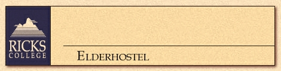

-
- June 8-14, 1997
- Discovering Idaho Opals; Everything You Wanted to Know
About Mormons, But Were Afraid to Ask; History and
Agriculture of the Upper Snake River Valley
- June 8-14, 1997
- Way Off Broadway: Intermountain Theatre
- June 15-21, 1997
- Volcanoes, Earthquakes, Hot Spots: Geology At Your
Fingertips; Shutterly Delightful: Color Slide
Photography; Is Your History A Mystery?: Genealogy Made
Easy
- June 22-28, 1997
- Discovering Idaho Opals; History and Agriculture of the
Upper Snake River Valley; The Moon and the Origins of
Heavenly Spheres
- June 22-28, 1997
- From Yellowstone to the Moon and Everything in Between;
Animals of Yellowstone; Geology of S.E. Idaho; Astronomy(Intergenerational)
- June 22-28, 1997
- Way Off Broadway: Intermountain Theatre
- June 29-July 5, 1997
- From Yellowstone to the Moon and Everything in Between;
Animals of Yellowstone; Geology of S.E. Idaho; Astronomy Intergenerational
- July 27-August 2, 1997
- Culture, Costume, Dance: Idaho International Folk Dance
Festival
- July 27-August 2, 1997
- Discovering Idaho Opals; History and Agriculture of the
Upper Snake River Valley; Science Cinema
- August 10-16, 1997
- From Yellowstone to the Moon and Everything in Between;
Animals of Yellowstone; Geology of S.E. Idaho; Astronomy (Intergenerational)
- August 10-16, 1997
- Discovering Idaho Opals; Everything You Wanted to Know
About the Mormons, But Were Afraid to Ask; History and
Agriculture of the Upper Snake River Valley
Elderhostel Main Menu
-
- June 8-14, 1997
- Horse Packing in the Lemhi Mountains: Nez Perce Indian
Trail
- June 15-21, 1997
- Horse Packing in the Lemhi Mountains: Nez Perce Indian
Trail
- June 22-28, 1997
- Horse Packing in the Teton Mountains: An Exploration of
Idaho History
- June 29-July 5, 1997
- Horse Packing in Yellowstone National Park
- July 20-26, 1997
- Horse Packing in Yellowstone Park: Bechler Meadows
- August 3-9, 1997
- Llama Packing in the Grand Tetons: Natural History of the
Teton Region
- August 17-23, 1997
- Canoeing in Yellowstone National Park: Lewis and Shoshone
Lakes
- September 14-20, 1997
- Horse Packing in Yellowstone Park: Gallatin Mountains
Elderhostel Main Menu
-
- June 22-28, 1997
- Intergenerational: Outdoor Adventure, Yellowstone History
and Geology
- July 20-26, 1997
- Intergenerational: Outdoor Adventure, Yellowstone History
and Geology
- August 10-16, 1997
- Intergenerational: Outdoor Adventure, Yellowstone History
and Geology
Elderhostel Main Menu
-
- September 28-October 4, 1997
- Volcanoes, Earthquakes, and Hot Spots: Cracks in Mother
Earth's Cupboard; Early History of Yellowstone Park: A
Unique Glimpse at the Past; Autumn's Splendor: Color
Slide Photography
Elderhostel Main Menu
-
- May 18-24, 1997
- Fire and Ice: Geologic Activity of Central Idaho; Ernest
Hemingway's Life and Writings: Sun Valley History: Life
Along the Wood River
- June 1-7,1997
- Ezra Loomis Pound: A Look at His Contentious Life; From
the Oregon Trail to the Sun Valley Resort; The
Fascinating Life of Salmon: From the Sawtooth Mountains
to the Pacific
- September 21-27, 1997
- Geology: Placer Mining for Gold; Ernest Hemingway's Life
and Writings; Sun Valley History: Life Along the Wood
River
Elderhostel Main Menu
-
- January 5-10, 1997
- Snowmobiling; Geology of Yellowstone; History of
Yellowstone
- January 12-17, 1997
- Cross-Country Skiing; Geology of Yellowstone; Biology of
Yellowstone
- June 1-7, 1997
- Caught in the Middle: Wild Animals of Yellowstone; In the
Beginning: Early History of Yellowstone Park; The
Plumbing of a Geyser: Geologic Processes in Yellowstone
Park
- September 14-20, 1997
- In the Beginning: Early History of Yellowstone Park; The
Plumbing of a Geyser: Geologic Processes in Yellowstone
Park; Fire Ecology: The 1988 Yellowstone Fires
- September 21-17, 1997
- The Plumbing of a Geyser: Geologic Processes in
Yellowstone Park; In the Beginning: Early History of
Yellowstone Park; Caught in the Middle: Wild Animals of
Yellowstone
Elderhostel Main Menu : Continuing Education Home Page